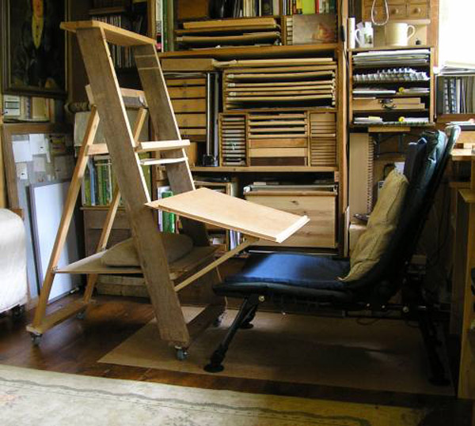

easels
^ Projects infobox ^^
| image | |
| designers | |
| date | |
| vitamins | |
| materials | |
| transformations | |
| lifecycles | |
| tools | [[wrenches|Wrenches]] |
| parts | [[frames|Frames]], [[nuts|Nuts]], [[bolts|Bolts]] |
| projects | |
| techniques | |
| files | |
| suppliers | |
| git | |
Introduction
An easel is an upright support used for displaying and/or fixing something resting upon it, at an angle of about 20° to the vertical. In particular, easels are traditionally used by painters to support a painting while they work on it, normally standing up, and are also sometimes used to display finished paintings.
Challenges
Approaches
